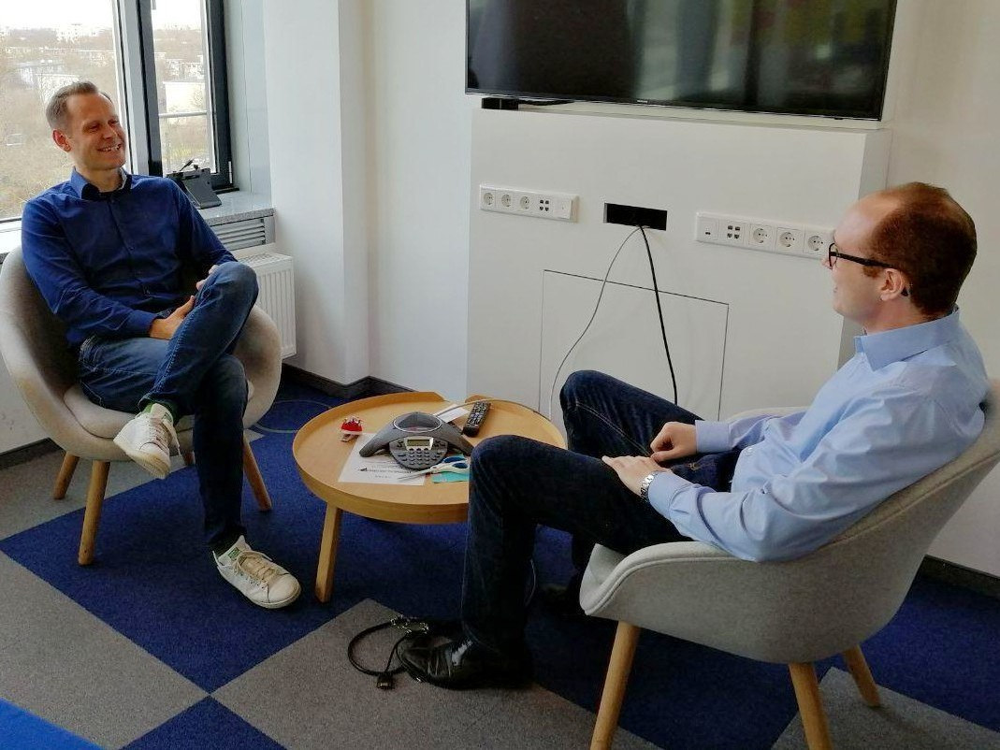

Undrafted Analytics
#UndraftedAnalytics is a German-language football analytics podcast project.
Data Strategy // Data Science // Machine Learning // Application Cases
Application cases on various topics // Data strategy approaches // Visualization compositions
#UndraftedAnalytics is a German-language football analytics podcast project.
Development of the theoretical basis for statistical hypothesis testing with calculation of sample data sets.
In this project an Excel spreadsheet will be presented which is closely oriented to a real case, but contains only simulated figures.
Two indicators from OECD's open database concerning violence against women are considered and presented as visualizations in the following. In this short essay the contents of the graphics are explained.
Discussions // Interviews // Background articles // Statements and opinions
How can I share my own professional experiences with Master’s students in business analytics and data science? Encourage them to self-reflect? I asked myself this question when I was invited to give a guest lecture at a University of Applied Sciences. My approach was to adapt the CRISP-DM process model which is familiar to many students and practitioners in the field of data science.
Published on
LinkedIn
Medium
Github

The Data Science Recruiter Marco Hoefler was interviewed by me about his job and the selection process for Data Science positions. He tells me what quali1ties applicants need to have in order to succeed in the process and which skills are of secondary importance.
Published on
LinkedIn
Medium
Github
Python // Data Science // Information and Knowledge Management
German podcast for football analytics